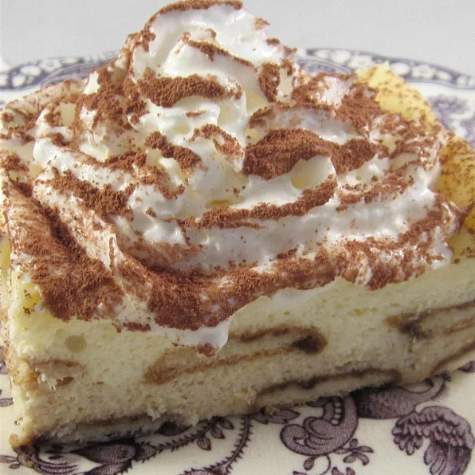

Tiramisu recipe

Creamy Tiramisu Cheesecake
Experience the taste of tiramisu in a spectacular, creamy cheesecake. Mamma mia!
Ingredients
- 1 (250 g) package Nilla Vanilla Wafers, divided
- 5 teaspoons MAXWELL HOUSE Instant Coffee, divided
- 3 tablespoons hot water, divided
- 4 (250 g) packages Philadelphia Brick Cream Cheese, softened
- 1 cup sugar
- 1 cup sour cream
- 4 eggs
- 1 cup thawed COOL WHIP Whipped Topping
- 2 tablespoons unsweetened cocoa powder
- Heat oven to 325 degrees F.
- Line 13x9-inch pan with foil, with ends of foil extending over sides. Spread half the wafers onto bottom of pan.
Add 2 tsp. coffee granules to 2 Tbsp. hot water; stir until dissolved.
Brush half onto wafers in pan; reserve remaining dissolved coffee for later use.
- Beat cream cheese and sugar in large bowl with mixer until well blended. Add sour cream; mix well.
Add eggs, 1 at a time, mixing on low speed after each just until blended.
Remove 3-1/2 cups batter; place in medium bowl. Dissolve remaining coffee granules in remaining hot water.
Stir into removed batter; pour over wafers in pan. Top with remaining wafers; brush with remaining dissolved coffee.
Cover with remaining plain batter.
- Bake 45 min. or until centre is almost set. Cool. Refrigerate 3 hours. Use foil handles to lift cheesecake from pan.
Top with Cool Whip and cocoa powder just before serving.
Go back